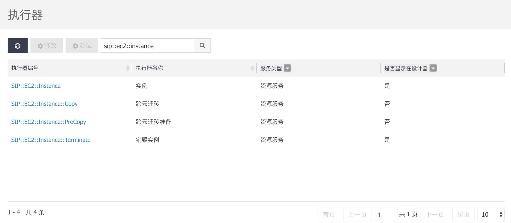
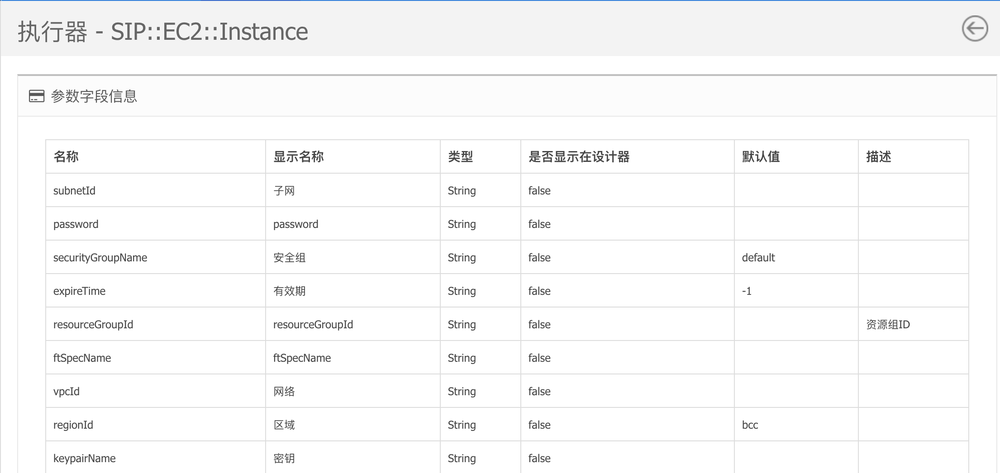
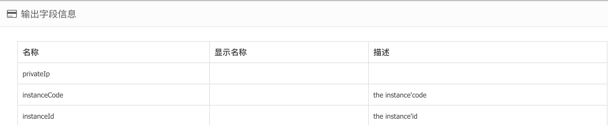

版本说明
1.前言
2.功能介绍
2.1.菜单说明
2.2.全新部署
2.3.运维升级
2.4.设计器简介
2.使用指引
3.1.使用前准备
3.2.创建应用版本关系
3.3.创建部署方案
3.4.方案设计
3.4.1.设计一个最简单的流程
3.4.2.并行控制
3.4.3.等待控制
3.4.4.参数引用和取值
3.4.5.子流程处理多机部署的问题
3.5.配置参数模板
3.6.部署调试
3.7.发布到服务
3.使用范例
3.1.制作单机架构的web应用
3.2.制作双机架构的web应用
3.3.制作一主多从架构的web应用
4.执行器说明
4.1.资源服务
4.1.1.实例
4.1.2.存储
4.1.3.负载均衡
4.1.4.VIP
4.1.5.安全组
4.1.6.弹性IP
4.2.指令服务
4.2.1. 自定义指令
4.2.2. 通用指令
4.2.3. 组件
4.2.4. 文件
4.2.5. 防火墙端口
4.2.4. Host设置
6.高级功能
6.1. 函数
6.2. agent上报变量
7.常见问题
Published with GitBook
4.执行器说明
4.执行器
执行器，即Stone，是流程引擎的执行单元。编排流程图的每个任务节点对应一个执行器。
列表信息
执行器编号：执行器的唯一标示
执行器名称
服务类型：执行器归属于服务
是否显示在设计器：如设置为否，则不显示在设计器中

详情信息
查看stone的输入信息和输出信息。

输出：

results matching "
"
No results matching "
"